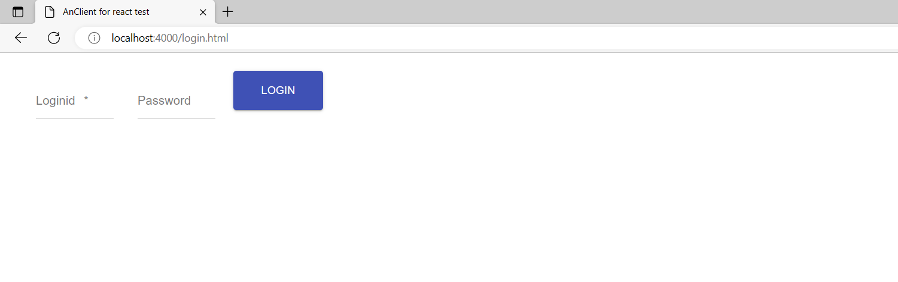

1. 前端部署
1.1. 下载
1.2. 安装
先解压 anclient-session.zip 文件，打开cmd切换到解压后的目录，举例：
执行安装命令：npm install，安装成功则提示如下：
注意
如果安装过程中报错，可以尝试命令： npm install –legacy-peer-deps 重新安装
1.3. 启动
执行启动命名：npm run dev，启动成功则提示如下（默认端口4000）：
浏览器中输入http://localhost:4000/login.html，进入登录页面：
